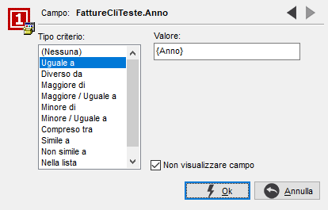

In questa finestra è possibile definire eventuali criteri di selezione per ogni campo presente sulla statistica.

Se si ritiene necessario dover richiedere dei parametri variabili per l'esecuzione della statistica, nel campo 'Valore' deve essere inserito tra parentesi graffe ({}) il nome del parametro che si vuole far comparire nella richiesta.
Con il tipo di criterio 'Nella lista' e 'Non nella lista' non è possibile utilizzare parametri variabili.
Se il campo deve essere utilizzato solo come criterio di selezione e non come risultato della statistica, apporre la spunta alla casella 'Non visualizzare campo'.